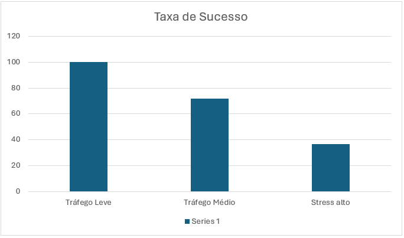
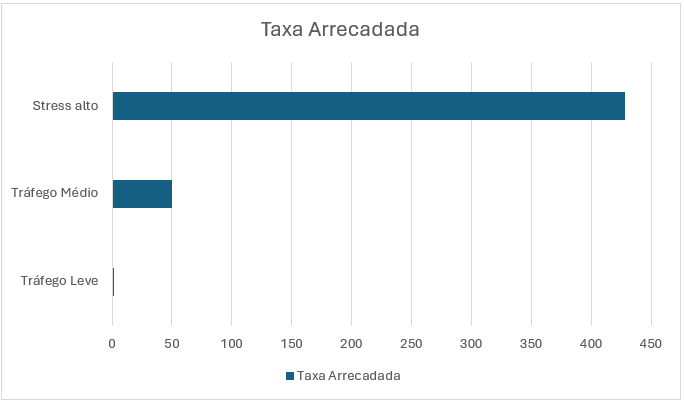

Resultados¶
Esta seção apresenta os resultados obtidos durante a execução dos experimentos descritos anteriormente. Os dados foram coletados automaticamente pelo simulador e armazenados no arquivo resultados_experimentos.json, permitindo comparar o comportamento da rede sob diferentes níveis de utilização.
Os resultados apresentados correspondem aos três cenários definidos durante os experimentos:
- Tráfego Leve;
- Tráfego Médio;
- Stress Alto.
Visão Geral¶
A Tabela 1 apresenta um resumo das principais métricas coletadas durante cada cenário.
| Cenário | Pagamentos | Sucessos | Falhas | Taxa de Sucesso | Taxas Arrecadadas (sats) |
|---|---|---|---|---|---|
| Tráfego Leve | 50 | 50 | 0 | 100,0% | 2 |
| Tráfego Médio | 200 | 144 | 56 | 72,0% | 50 |
| Stress Alto | 500 | 184 | 316 | 36,8% | 428 |
Observa-se uma redução significativa da taxa de sucesso conforme aumenta o número de pagamentos executados. Em contrapartida, a quantidade total de taxas arrecadadas cresce consideravelmente, indicando maior utilização dos canais remanescentes da rede.
Taxa de Sucesso¶
A Figura 1 apresenta a taxa de sucesso obtida em cada cenário.
Figura 1 – Comparação da taxa de sucesso dos pagamentos.

Os resultados demonstram que:
- O cenário de tráfego leve apresentou sucesso em todos os pagamentos;
- O cenário intermediário apresentou redução da disponibilidade de rotas;
- O cenário de stress apresentou uma queda acentuada da taxa de sucesso.
Esse comportamento é consistente com a simulação de esgotamento progressivo da liquidez implementada pelo simulador.
Falhas de Roteamento¶
A quantidade de falhas aumentou significativamente conforme o volume de pagamentos cresceu.
| Cenário | Falhas |
|---|---|
| Tráfego Leve | 0 |
| Tráfego Médio | 56 |
| Stress Alto | 316 |
Como os canais utilizados têm sua capacidade reduzida após cada pagamento bem-sucedido, parte das rotas inicialmente disponíveis torna-se inviável ao longo da simulação.
Consequentemente, o algoritmo passa a encontrar um número menor de caminhos capazes de transportar os valores solicitados.
Taxas Arrecadadas¶
A Figura 2 apresenta o total de taxas arrecadadas pelos nós intermediários.
Figura 2 – Comparação da taxa arrecadada.

O aumento observado ocorre porque:
- Um número maior de pagamentos é processado;
- As rotas passam a utilizar caminhos alternativos;
- Mais nós intermediários participam do roteamento.
Mesmo com a redução da taxa de sucesso, os pagamentos concluídos tendem a percorrer caminhos que geram maior arrecadação para os roteadores.
Nós com Maior Arrecadação¶
Durante cada cenário foram registrados os nós que obtiveram maior lucro com o encaminhamento de pagamentos.
Tráfego Leve¶
| Nó | Lucro (sats) |
|---|---|
| Binance Node | 2 |
| Charlie's Node | 0 |
| David's Node | 0 |
| Alice Routing | 0 |
| ACINQ Node | 0 |
Tráfego Médio¶
| Nó | Lucro (sats) |
|---|---|
| Kraken Node | 15 |
| Binance Node | 14 |
| Wallet Of Satoshi | 9 |
| Bob's Node | 6 |
| Alice Routing | 3 |
Stress Alto¶
| Nó | Lucro (sats) |
|---|---|
| Wallet Of Satoshi | 248 |
| Kraken Node | 118 |
| Binance Node | 48 |
| Bob's Node | 8 |
| Alice Routing | 4 |
Os resultados mostram que poucos nós concentram grande parte das taxas arrecadadas, especialmente durante cenários de maior utilização da rede.
Evolução Entre os Cenários¶
Comparando os três cenários, observa-se um comportamento consistente.
À medida que aumenta o número de pagamentos:
- Cresce o consumo da liquidez disponível;
- Diminui a quantidade de rotas viáveis;
- Reduz-se a taxa de sucesso;
- Aumenta a arrecadação dos nós que permanecem disponíveis para roteamento.
Esses resultados demonstram que a disponibilidade de liquidez possui influência direta sobre a eficiência do algoritmo de roteamento.
Síntese dos Resultados¶
Os experimentos evidenciam três tendências principais:
-
A redução progressiva da liquidez impacta diretamente a capacidade da rede de concluir novos pagamentos.
-
O aumento do tráfego provoca crescimento significativo da arrecadação de taxas pelos nós intermediários.
-
Poucos nós concentram grande parte da receita obtida com o roteamento, especialmente nos cenários de maior carga.
Essas observações serão discutidas com maior profundidade na próxima seção.